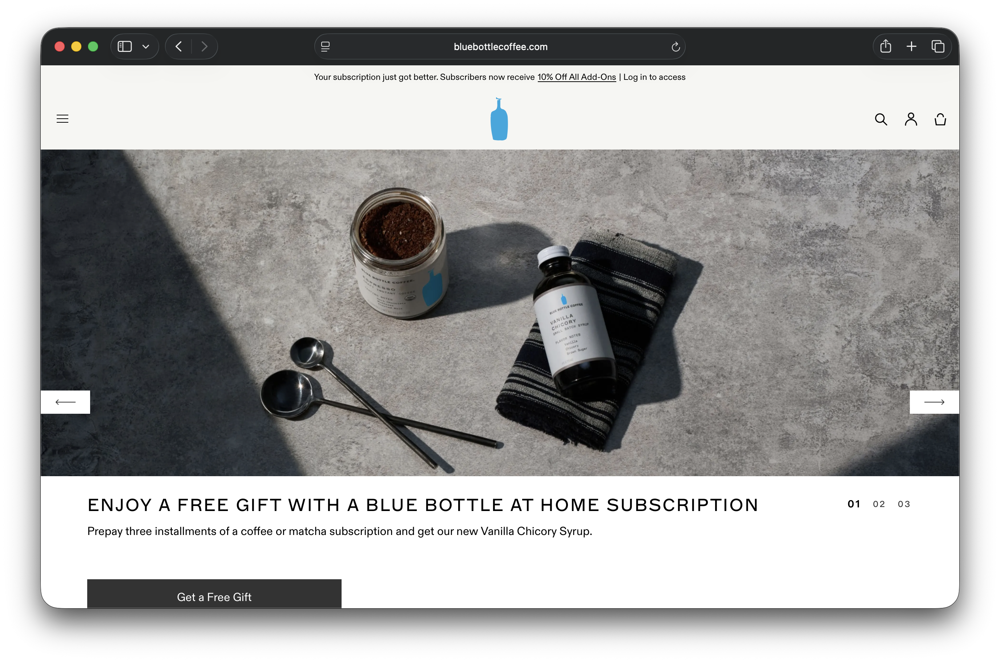
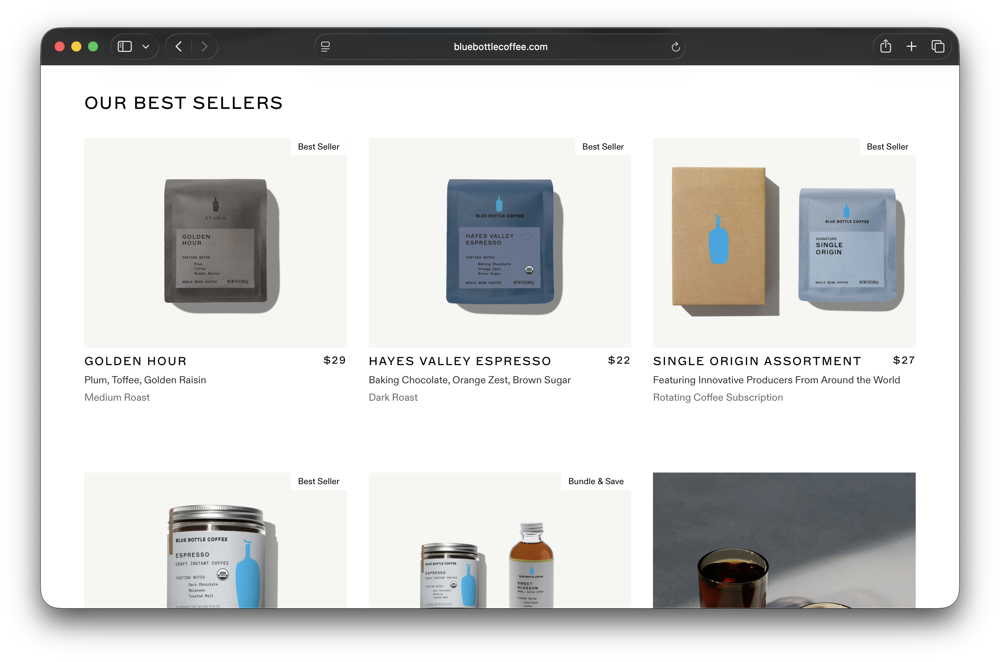
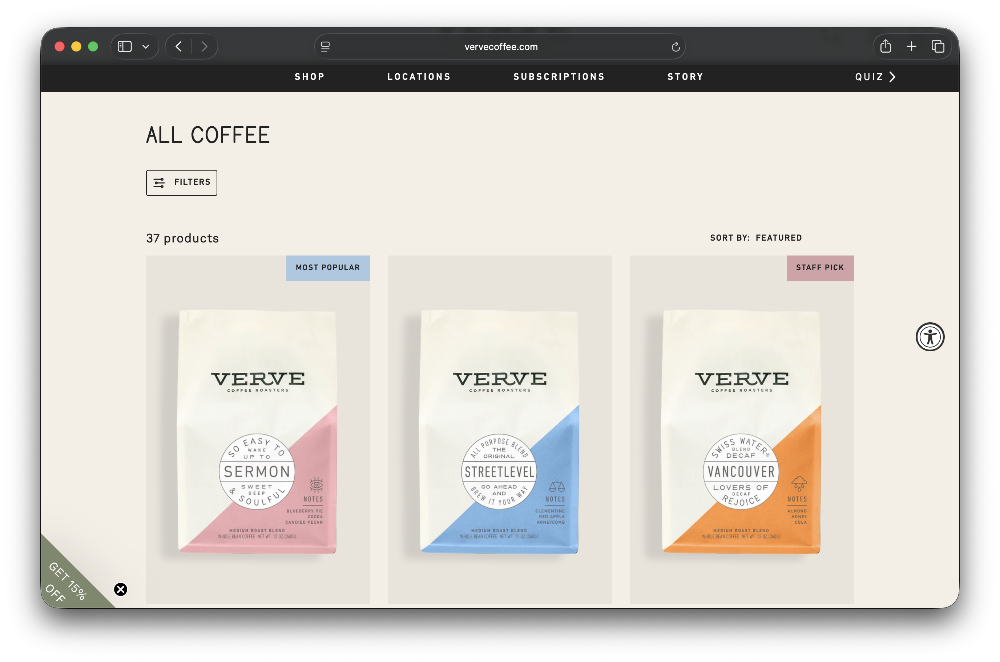
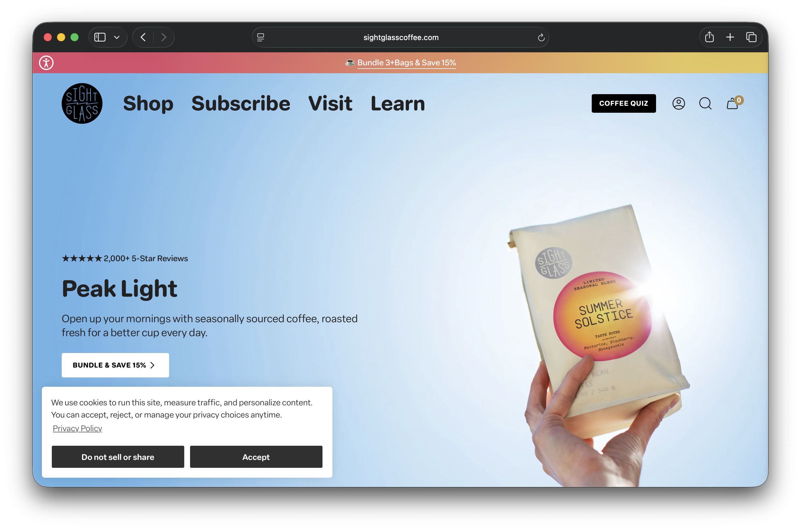
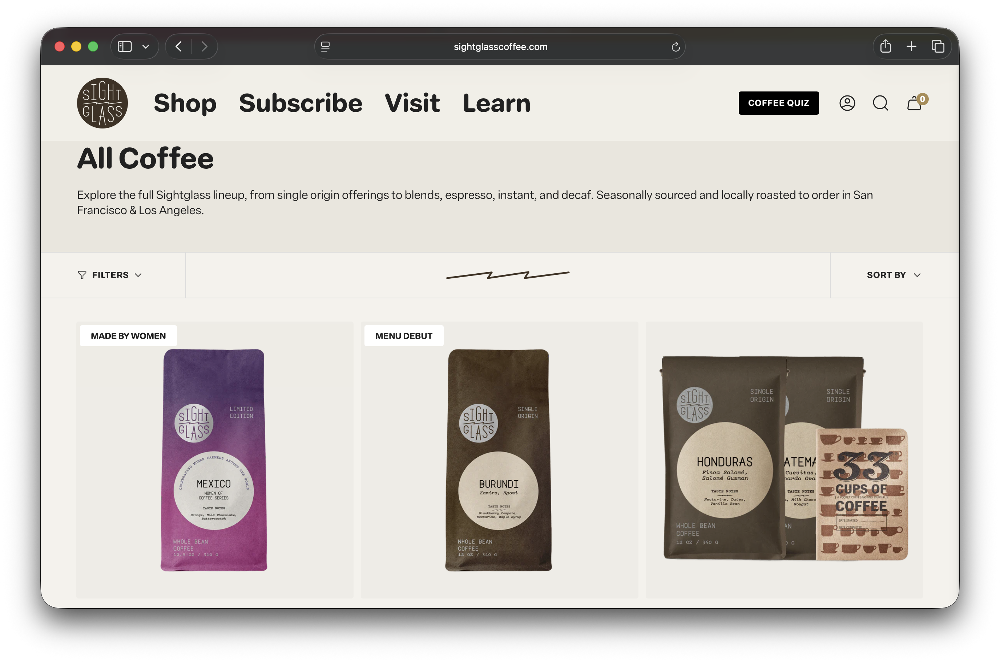

Final project proposal
Introduction
Kai's Cafe
Kai's Cafe is a fictitious specialty coffee shop located in San Luis Obispo, California. It is a trendy, modern cafe that focuses on high-quality, carefully sourced coffee drinks and freshly baked pastries. The space is designed to feel clean and minimal, appealing to people who take their coffee seriously but also want a comfortable place to sit and work or catch up with friends.
Target audience
The people who visit Kai's Cafe are looking for a high-quality coffee experience in a calm, aesthetically pleasing environment. They want to know they are getting well-crafted drinks made with good ingredients, and they care about the details — the origin of the beans, the preparation method, and the atmosphere of the space.
People visiting the website are likely trying to check the menu before they come in, find out where the cafe is located and what the hours are, or get a feel for the vibe of the place before visiting for the first time. The website needs to communicate quality, warmth, and simplicity so that visitors feel confident and excited to come in.
Comparative analysis
Blue Bottle Coffee


Verve Coffee Roasters


Sightglass Coffee


Website content
Home
Good coffee, good company. Welcome to Kai's Cafe.
123 Higuera Street, San Luis Obispo, California
805-555-0192
[Aerial view of a white ceramic coffee cup with latte art on a marble counter.]
About
Kai's Cafe was born out of a simple idea: that great coffee should be accessible, unpretentious, and made with real care. We opened our doors in 2022 in the heart of San Luis Obispo with a small but focused menu, a carefully designed space, and a commitment to sourcing beans from farms that treat their workers and land well.
We work with a rotating selection of single-origin beans roasted fresh each week by our partners at a small roastery in Oakland. Every drink on our menu is prepared to order by baristas who genuinely love what they do. Whether you come in for a quick espresso on your way to class or spend the afternoon working at one of our tables, we want Kai's Cafe to feel like your spot.
[Interior of Kai's Cafe showing warm lighting, wooden tables, and a long white marble bar with stools.]
[Close-up of a barista's hands pouring a pour-over coffee through a gooseneck kettle.]
Menu
Espresso Drinks
Espresso
A single or double shot of our Hayes Valley blend. Rich, chocolatey, with a hint of fruit.
$3.50
Cortado
Equal parts espresso and steamed whole milk. Small, balanced, and smooth.
$4.50
Latte
Double espresso with steamed milk and a thin layer of foam. Available hot or iced.
$5.50
Cappuccino
Double espresso with equal parts steamed milk and thick microfoam.
$5.00
Cold Drinks
New Orleans Iced Coffee
Cold brew brewed with roasted chicory, blended with whole milk and organic cane sugar. A Kai's classic.
$6.00
Shakerato
Espresso shaken with ice, a touch of sugar, and a splash of vanilla until frothy and chilled.
$6.50
Matcha Latte
Ceremonial grade matcha whisked with steamed oat milk. Earthy and smooth.
$6.00
Pastries
Butter Croissant
Flaky, buttery, and baked fresh each morning. Best enjoyed warm.
$4.50
Sesame Pretzel Croissant
A savory twist on our classic croissant, topped with sesame seeds and a touch of sea salt.
$5.00
[Flat lay of espresso drinks and pastries arranged on a white marble surface.]
Location
123 Higuera Street, San Luis Obispo, California 93401
805-555-0192
Hours
- Monday–Friday: 7:00 am–5:00 pm
- Saturday–Sunday: 8:00 am–4:00 pm
[Street-level exterior of Kai's Cafe with large windows, a minimal sign, and two small tables outside on the sidewalk.]
[Map showing the location of Kai's Cafe on Higuera Street in downtown San Luis Obispo.]